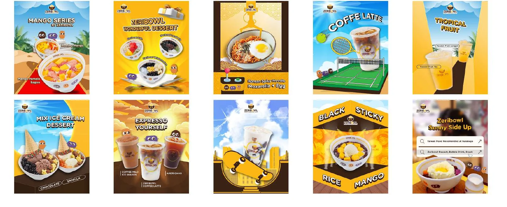
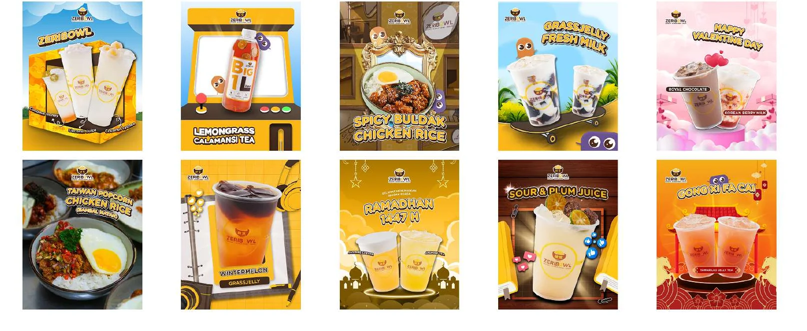
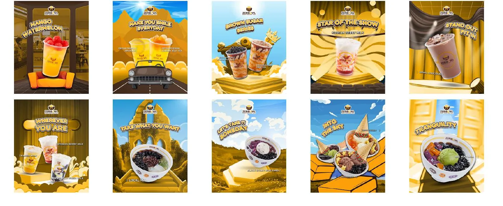
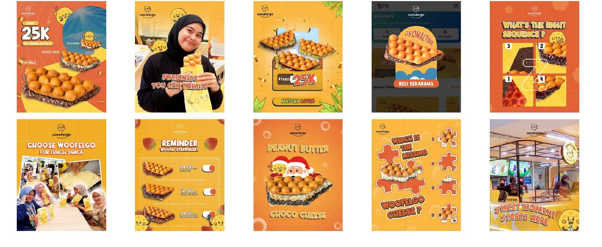
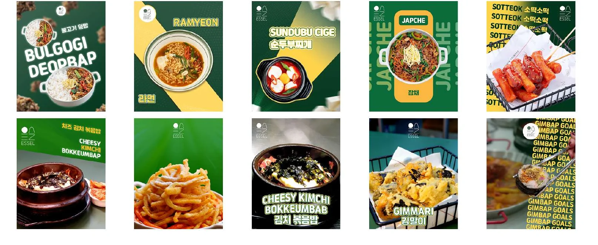
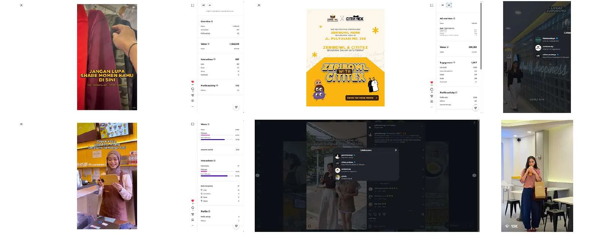

My Role
- Digital marketing
- Graphic design
- Product photography
- Short video
- KOL coordination
Context
Managed digital marketing for four brands (Zeribowl Surabaya, Essel Surabaya, Woofelgo, and Cititex Surabaya), with Zeribowl as the main focus. Nov 2025 – Jul 2026, contract.
Objective
Increase engagement for the food and beverage brand Zeribowl through consistent content and creator collaborations.
Process
KOL collaboration workflow:
- Find suitable talent.
- Negotiate fees.
- Brief the creator.
- Coordinate the store visit.
Visual decisions visible in the content:
- A yellow and orange palette with recurring brand mascot characters keeps the feed recognisable.
- Each monthly set follows a theme: February 2026 covers Valentine’s Day, Ramadan 1447 H, and Lunar New Year; March 2026 uses stage, sky, and podium scenes.
- Campaign material for a Zeribowl and Cititex collaboration, plus content made with creators through Instagram collaborations.
Deliverables
- Daily graphic design, product photography, and short video across digital platforms.
- Instagram visuals for Zeribowl, Essel, and Woofelgo.
- Monthly sets for February and March 2026 (10 visuals each).
- Campaign and KOL collaboration material.
Results
The gallery includes Instagram Insights screenshots from the campaign and collaboration content. Their resolution is too low to quote exact figures, so none are stated here.
Gallery





